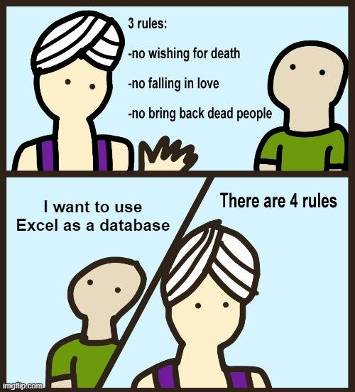
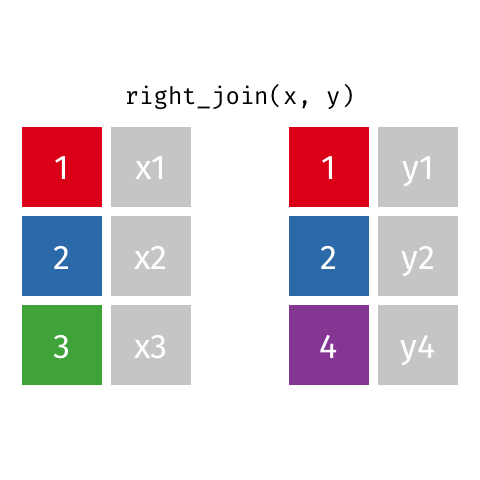
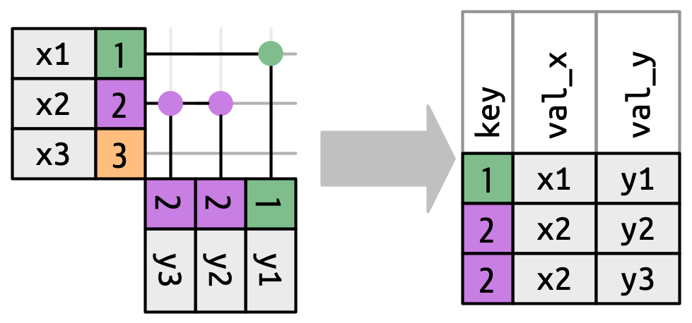
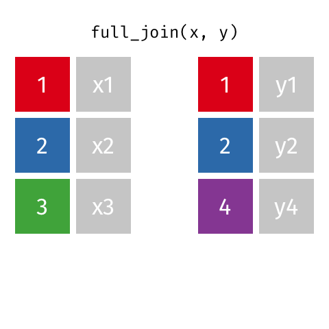
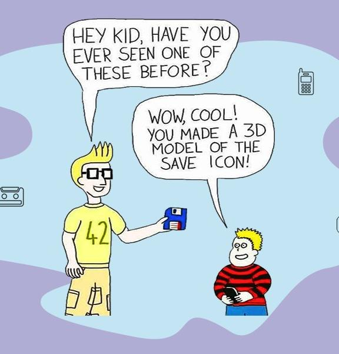

fship <- tribble(
~Film, ~Race, ~Female, ~Male,
"The Fellowship Of The Ring", "Elf", 1229, 971,
"The Fellowship Of The Ring", "Hobbit", 14, 3644,
"The Fellowship Of The Ring", "Man", 0, 1995
)
rking <- tribble(
~Film, ~Race, ~Female, ~Male,
"The Return Of The King", "Elf", 183, 510,
"The Return Of The King", "Hobbit", 2, 2673,
"The Return Of The King", "Man", 268, 2459
)
ttow <- tribble(
~Film, ~Race, ~Female, ~Male,
"The Two Towers", "Elf", 331, 513,
"The Two Towers", "Hobbit", 0, 2463,
"The Two Towers", "Man", 401, 3589
)Joins and I/O
Working with Multiple Data Sets
Chad Murchison
2024-07-24
Agenda
Binding data frames
Merges and joins
Input and output

Binding Data Frames
Binding - Brute Force
The most basic way to combine data frames or tibbles is using binding
Can bind by rows (make longer) or by columns (make wider)
It works but it’s not recommended
Puts resposibility on the programmer
Is reliant on consistent structure in the data frame
Is brutish compared to formal merges
Good as illustrative exercise
Binding - One Dataset…to Bind Them
- Some Lord of the Rings dialogue data
Binding - Binding Row-wise
Row binding increases your observations
The main consideration is the nature of the variables
Do the same variables exist in each?
Are they the same type/class?
Are they in the same position?
If all these hold, then a row bind is feasible using
rbind()orrbind.data.frame()in base R orbind_rows()fromdplyr
Important
Onus is on the programmer to verify these variable criteria
Binding - The 9 Rows of Man
- Row-wise binding in action
# A tibble: 9 × 4
Film Race Female Male
<chr> <chr> <dbl> <dbl>
1 The Fellowship Of The Ring Elf 1229 971
2 The Fellowship Of The Ring Hobbit 14 3644
3 The Fellowship Of The Ring Man 0 1995
4 The Return Of The King Elf 183 510
5 The Return Of The King Hobbit 2 2673
6 The Return Of The King Man 268 2459
7 The Two Towers Elf 331 513
8 The Two Towers Hobbit 0 2463
9 The Two Towers Man 401 3589Binding - Row Binding Protection
- Simple coercion, mainly factor to character, is allowed
# A tibble: 9 × 4
Film Race Female Male
<chr> <chr> <dbl> <dbl>
1 The Fellowship Of The Ring Elf 1229 971
2 The Fellowship Of The Ring Hobbit 14 3644
3 The Fellowship Of The Ring Man 0 1995
4 The Return Of The King Elf 183 510
5 The Return Of The King Hobbit 2 2673
6 The Return Of The King Man 268 2459
7 The Two Towers Elf 331 513
8 The Two Towers Hobbit 0 2463
9 The Two Towers Man 401 3589Binding - Row Binding Protection
- Factor levels can be disparate
ttow_factor <- mutate(ttow, Race = fct(Race), Race = fct_expand(Race, "Orc"))
fship_factor <- mutate(fship, Race = fct(Race), Race = fct_expand(Race, "Ent"))
rbind(fship_factor, ttow_factor)# A tibble: 6 × 4
Film Race Female Male
<chr> <fct> <dbl> <dbl>
1 The Fellowship Of The Ring Elf 1229 971
2 The Fellowship Of The Ring Hobbit 14 3644
3 The Fellowship Of The Ring Man 0 1995
4 The Two Towers Elf 331 513
5 The Two Towers Hobbit 0 2463
6 The Two Towers Man 401 3589[1] "Elf" "Hobbit" "Man" "Ent" "Orc" Binding - Row Binding Protection
- Positioning can be different as long as names match
# A tibble: 9 × 4
Film Race Female Male
<chr> <chr> <dbl> <dbl>
1 The Fellowship Of The Ring Elf 1229 971
2 The Fellowship Of The Ring Hobbit 14 3644
3 The Fellowship Of The Ring Man 0 1995
4 The Return Of The King Elf 183 510
5 The Return Of The King Hobbit 2 2673
6 The Return Of The King Man 268 2459
7 The Two Towers Elf 331 513
8 The Two Towers Hobbit 0 2463
9 The Two Towers Man 401 3589Binding - Row Binding Protection
bind_rows()will fill empty columns withNAbut notrbind()
# A tibble: 9 × 4
Film Race Female Male
<chr> <chr> <dbl> <dbl>
1 The Fellowship Of The Ring Elf 1229 971
2 The Fellowship Of The Ring Hobbit 14 3644
3 The Fellowship Of The Ring Man 0 1995
4 The Return Of The King Elf 183 510
5 The Return Of The King Hobbit 2 2673
6 The Return Of The King Man 268 2459
7 The Two Towers Elf 331 NA
8 The Two Towers Hobbit 0 NA
9 The Two Towers Man 401 NAError in rbind(deparse.level, ...): numbers of columns of arguments do not matchBinding - Row Binding Gone Wrong
- Some coercion tosses an error
Binding - Row Binding Gone Wrong
- But if the same variables have different names, you suffer
Error in match.names(clabs, names(xi)): names do not match previous names# A tibble: 6 × 5
Film Race Female Male Fem
<chr> <chr> <dbl> <dbl> <dbl>
1 The Fellowship Of The Ring Elf 1229 971 NA
2 The Fellowship Of The Ring Hobbit 14 3644 NA
3 The Fellowship Of The Ring Man 0 1995 NA
4 The Return Of The King Elf NA 510 183
5 The Return Of The King Hobbit NA 2673 2
6 The Return Of The King Man NA 2459 268- Check your work or even better, don’t use row binding
Binding - Column Binding
Much scarier than row binding
Row MUST be aligned to avoid data quality issues
Many other safer options exists
mutate()separate_wider_Even
$is better
- Enforce constraints rather than using
cbind()orbind_cols()
Binding - Column Binding In Action <gulp>
- Column binding frequently works even when you think it shouldn’t
# A tibble: 3 × 12
Film...1 Race...2 Female...3 Male...4 Film...5 Race...6 Female...7 Male...8
<chr> <chr> <dbl> <dbl> <chr> <chr> <dbl> <dbl>
1 The Fellow… Elf 1229 971 The Ret… Elf 183 510
2 The Fellow… Hobbit 14 3644 The Ret… Hobbit 2 2673
3 The Fellow… Man 0 1995 The Ret… Man 268 2459
# ℹ 4 more variables: Film...9 <chr>, Race...10 <chr>, Female...11 <dbl>,
# Male...12 <dbl> Film Race Female Male Film Race
1 The Fellowship Of The Ring Elf 1229 971 The Return Of The King Elf
2 The Fellowship Of The Ring Hobbit 14 3644 The Return Of The King Hobbit
3 The Fellowship Of The Ring Man 0 1995 The Return Of The King Man
Female Male Film Race Female Male
1 183 510 The Two Towers Elf 331 513
2 2 2673 The Two Towers Hobbit 0 2463
3 268 2459 The Two Towers Man 401 3589Binding - Column Binding In Action <gulp>
cbind()in particular is frightening because of recycling
Film Race Female Male Film Race Female Male
1 The Fellowship Of The Ring Elf 1229 971 The Two Towers Elf 331 513
2 The Fellowship Of The Ring Hobbit 14 3644 The Two Towers Hobbit 0 2463
3 The Fellowship Of The Ring Man 0 1995 The Two Towers Man 401 3589
4 The Return Of The King Elf 183 510 The Two Towers Elf 331 513
5 The Return Of The King Hobbit 2 2673 The Two Towers Hobbit 0 2463
6 The Return Of The King Man 268 2459 The Two Towers Man 401 3589- Check your work, or even better, don’t use column binding
Binding - Just Don’t
Bottom line is this:
Row bind when needed but be sure to check your work afterwards
Column bind only if absolutely necessary and be exceedingly distrustful of the results
There are much better and safer options called joins
Joins
Joins - Built from Relational Data
Multiple separate but associated datasets comprise relational data
Now we think beyond structuring data in rows and columns but to include tables that can be linked (i.e. related)
These relationships allow for joins by associative variables called keys
FYI R (like Excel) is NOT a RDBMS
Joins - Keys
All joins involve keys in the connecting tables
Primary keys are the unique identifier for a record in a dataset
Each table only has one primary key and ensures each observation can be uniquely identified
Compound keys use two or more columns / variables to identify unique records
The combination ensures uniqueness although surrogate primary keys may be useful
Foreign keys in one table uniquely identify a record in another table
Establish the link from the child table to the parent/referenced table
Joins - What Keys Do
Keys are great for many reason like ensuring uniqueness, enforcing integrity, and facilitating indexing
They are also the backbone of joins since they establish how tables are related
We join tables by matching the primary keys in one table to the foreign key in another
By matching tables record-wise by key we can make single tables
Joins - Catching Another Flight
The
nycflights13dataset has many tables beyond ourflightsairlinesrecords the carrier name and its two letter code (PK)airportsgives positional/idetifying data for each airport with each identified by its unique faa call (PK)planeshas data about each plane itself with its tail number (PK) as the identifierweathergives weather data at each origin airport by time (compound PK)
These primary keys all link back to foreign keys within
flights
Joins - Mapping the Relationships

Joins - Mapping to Flights
- For our joins, we’ll consider a reduced set of
flightscalledflight
# A tibble: 336,776 × 6
year time_hour origin dest tailnum carrier
<int> <dttm> <chr> <chr> <chr> <chr>
1 2013 2013-01-01 05:00:00 EWR IAH N14228 UA
2 2013 2013-01-01 05:00:00 LGA IAH N24211 UA
3 2013 2013-01-01 05:00:00 JFK MIA N619AA AA
4 2013 2013-01-01 05:00:00 JFK BQN N804JB B6
5 2013 2013-01-01 06:00:00 LGA ATL N668DN DL
6 2013 2013-01-01 05:00:00 EWR ORD N39463 UA
7 2013 2013-01-01 06:00:00 EWR FLL N516JB B6
8 2013 2013-01-01 06:00:00 LGA IAD N829AS EV
9 2013 2013-01-01 06:00:00 JFK MCO N593JB B6
10 2013 2013-01-01 06:00:00 LGA ORD N3ALAA AA
# ℹ 336,766 more rowsJoins - Some Caveats
Life is easier when the same variables have the same name, but not always the case
Different variables ideally have different names, but not always the case e.g.
yearinflightsandplanesare differentData WILL be missing from one table of the other
Rows will invariably have different units of observation
Joins - The dplyr Verbs
dplyrhas three families of functions used for joins:Mutating joins combine variables from two data frames by matching rows from one table to another
Filtering joins filter observations in one table based on whether they match a record in the other table
Set operations combine observations as if they were set elements
For better or worse,
dplyronly joins two tables at a timexandy
Joins - dplyr Joins by by
All
dplyrjoins generally control matching the same way, withbyby = NULLuses all variables common to both tables aka a natural joinby = "x", where"x"is a character vector, is a natural join but only uses some common variablesUseful when the tables have two distinct variables with the same name
by = c("x" = "a")matches variable"x"in tablexwith variable"a"in tableyUseful when the matching variables have different names
by = join_by()using an expression on variable names e.g.x == a
Joins - Mutating Joins to Add Variables
These joins will return all columns in
xand all columns inyIf the foreign key matches multiple times, all combinations of PK-FK pairs are returned
Left join - return all rows in
xand those inythat match inxRight join - return all rows in
yand those inxthat match inyInner join - return all rows that match in both
xandyFull join - return all rows in
xand all rows iny
Returned rows that were unmatched get
NAin the new columns from the other table
Joins - Visual Diagram of Mutating Joins
Joins - Left Join via left_join()


- Easily the most common, always returns all rows of the parent table
x
Joins - left_join() with flight
- A left join between
flightandarlines
# A tibble: 336,776 × 7
year time_hour origin dest tailnum carrier name
<int> <dttm> <chr> <chr> <chr> <chr> <chr>
1 2013 2013-01-01 05:00:00 EWR IAH N14228 UA United Air Lines Inc.
2 2013 2013-01-01 05:00:00 LGA IAH N24211 UA United Air Lines Inc.
3 2013 2013-01-01 05:00:00 JFK MIA N619AA AA American Airlines Inc.
4 2013 2013-01-01 05:00:00 JFK BQN N804JB B6 JetBlue Airways
5 2013 2013-01-01 06:00:00 LGA ATL N668DN DL Delta Air Lines Inc.
6 2013 2013-01-01 05:00:00 EWR ORD N39463 UA United Air Lines Inc.
7 2013 2013-01-01 06:00:00 EWR FLL N516JB B6 JetBlue Airways
8 2013 2013-01-01 06:00:00 LGA IAD N829AS EV ExpressJet Airlines Inc.
9 2013 2013-01-01 06:00:00 JFK MCO N593JB B6 JetBlue Airways
10 2013 2013-01-01 06:00:00 LGA ORD N3ALAA AA American Airlines Inc.
# ℹ 336,766 more rowsJoins - left_join() with flight
- A left join between
flightandweatherwith a select for temp/wind
# A tibble: 336,776 × 8
year time_hour origin dest tailnum carrier temp wind_speed
<int> <dttm> <chr> <chr> <chr> <chr> <dbl> <dbl>
1 2013 2013-01-01 05:00:00 EWR IAH N14228 UA 39.0 12.7
2 2013 2013-01-01 05:00:00 LGA IAH N24211 UA 39.9 15.0
3 2013 2013-01-01 05:00:00 JFK MIA N619AA AA 39.0 15.0
4 2013 2013-01-01 05:00:00 JFK BQN N804JB B6 39.0 15.0
5 2013 2013-01-01 06:00:00 LGA ATL N668DN DL 39.9 16.1
6 2013 2013-01-01 05:00:00 EWR ORD N39463 UA 39.0 12.7
7 2013 2013-01-01 06:00:00 EWR FLL N516JB B6 37.9 11.5
8 2013 2013-01-01 06:00:00 LGA IAD N829AS EV 39.9 16.1
9 2013 2013-01-01 06:00:00 JFK MCO N593JB B6 37.9 13.8
10 2013 2013-01-01 06:00:00 LGA ORD N3ALAA AA 39.9 16.1
# ℹ 336,766 more rowsJoins - left_join() with flight
- A left join between
flightandplaneswith a failed natural join
# A tibble: 336,776 × 13
year time_hour origin dest tailnum carrier type manufacturer model engines seats speed engine
<int> <dttm> <chr> <chr> <chr> <chr> <chr> <chr> <chr> <int> <int> <int> <chr>
1 2013 2013-01-01 05:00:00 EWR IAH N14228 UA <NA> <NA> <NA> NA NA NA <NA>
2 2013 2013-01-01 05:00:00 LGA IAH N24211 UA <NA> <NA> <NA> NA NA NA <NA>
3 2013 2013-01-01 05:00:00 JFK MIA N619AA AA <NA> <NA> <NA> NA NA NA <NA>
4 2013 2013-01-01 05:00:00 JFK BQN N804JB B6 <NA> <NA> <NA> NA NA NA <NA>
5 2013 2013-01-01 06:00:00 LGA ATL N668DN DL <NA> <NA> <NA> NA NA NA <NA>
6 2013 2013-01-01 05:00:00 EWR ORD N39463 UA <NA> <NA> <NA> NA NA NA <NA>
7 2013 2013-01-01 06:00:00 EWR FLL N516JB B6 <NA> <NA> <NA> NA NA NA <NA>
8 2013 2013-01-01 06:00:00 LGA IAD N829AS EV <NA> <NA> <NA> NA NA NA <NA>
9 2013 2013-01-01 06:00:00 JFK MCO N593JB B6 <NA> <NA> <NA> NA NA NA <NA>
10 2013 2013-01-01 06:00:00 LGA ORD N3ALAA AA <NA> <NA> <NA> NA NA NA <NA>
# ℹ 336,766 more rowsJoins - left_join() with flight
- Since
yearmeans different things, we want to specifyby = tailnum
# A tibble: 336,776 × 14
year.x time_hour origin dest tailnum carrier year.y type manufacturer model engines seats speed engine
<int> <dttm> <chr> <chr> <chr> <chr> <int> <chr> <chr> <chr> <int> <int> <int> <chr>
1 2013 2013-01-01 05:00:00 EWR IAH N14228 UA 1999 Fixed wing multi engine BOEING 737-824 2 149 NA Turbo-fan
2 2013 2013-01-01 05:00:00 LGA IAH N24211 UA 1998 Fixed wing multi engine BOEING 737-824 2 149 NA Turbo-fan
3 2013 2013-01-01 05:00:00 JFK MIA N619AA AA 1990 Fixed wing multi engine BOEING 757-223 2 178 NA Turbo-fan
4 2013 2013-01-01 05:00:00 JFK BQN N804JB B6 2012 Fixed wing multi engine AIRBUS A320-232 2 200 NA Turbo-fan
5 2013 2013-01-01 06:00:00 LGA ATL N668DN DL 1991 Fixed wing multi engine BOEING 757-232 2 178 NA Turbo-fan
6 2013 2013-01-01 05:00:00 EWR ORD N39463 UA 2012 Fixed wing multi engine BOEING 737-924ER 2 191 NA Turbo-fan
7 2013 2013-01-01 06:00:00 EWR FLL N516JB B6 2000 Fixed wing multi engine AIRBUS INDUSTRIE A320-232 2 200 NA Turbo-fan
8 2013 2013-01-01 06:00:00 LGA IAD N829AS EV 1998 Fixed wing multi engine CANADAIR CL-600-2B19 2 55 NA Turbo-fan
9 2013 2013-01-01 06:00:00 JFK MCO N593JB B6 2004 Fixed wing multi engine AIRBUS A320-232 2 200 NA Turbo-fan
10 2013 2013-01-01 06:00:00 LGA ORD N3ALAA AA NA <NA> <NA> <NA> NA NA NA <NA>
# ℹ 336,766 more rowsJoins - Right Join via right_join()


- Far less common than left joins
Joins - right_join() with flight
- A right join between
flightandplanes, equivalent toleft_join(airlines, flight)aside from column order
# A tibble: 284,170 × 14
year.x time_hour origin dest tailnum carrier year.y type manufacturer model engines seats speed engine
<int> <dttm> <chr> <chr> <chr> <chr> <int> <chr> <chr> <chr> <int> <int> <int> <chr>
1 2013 2013-01-01 05:00:00 EWR IAH N14228 UA 1999 Fixed wing multi engine BOEING 737-824 2 149 NA Turbo-fan
2 2013 2013-01-01 05:00:00 LGA IAH N24211 UA 1998 Fixed wing multi engine BOEING 737-824 2 149 NA Turbo-fan
3 2013 2013-01-01 05:00:00 JFK MIA N619AA AA 1990 Fixed wing multi engine BOEING 757-223 2 178 NA Turbo-fan
4 2013 2013-01-01 05:00:00 JFK BQN N804JB B6 2012 Fixed wing multi engine AIRBUS A320-232 2 200 NA Turbo-fan
5 2013 2013-01-01 06:00:00 LGA ATL N668DN DL 1991 Fixed wing multi engine BOEING 757-232 2 178 NA Turbo-fan
6 2013 2013-01-01 05:00:00 EWR ORD N39463 UA 2012 Fixed wing multi engine BOEING 737-924ER 2 191 NA Turbo-fan
7 2013 2013-01-01 06:00:00 EWR FLL N516JB B6 2000 Fixed wing multi engine AIRBUS INDUSTRIE A320-232 2 200 NA Turbo-fan
8 2013 2013-01-01 06:00:00 LGA IAD N829AS EV 1998 Fixed wing multi engine CANADAIR CL-600-2B19 2 55 NA Turbo-fan
9 2013 2013-01-01 06:00:00 JFK MCO N593JB B6 2004 Fixed wing multi engine AIRBUS A320-232 2 200 NA Turbo-fan
10 2013 2013-01-01 06:00:00 JFK PBI N793JB B6 2011 Fixed wing multi engine AIRBUS A320-232 2 200 NA Turbo-fan
# ℹ 284,160 more rowsJoins - Inner Join via inner_join()

- Multiple matching returns all combinations so it does make new rows
Joins - inner_join() with flight
- Again, combinations are returned even on inner joins if a match is found
# A tibble: 215,941 × 13
year time_hour origin dest tailnum carrier name lat lon alt tz dst tzone
<int> <dttm> <chr> <chr> <chr> <chr> <chr> <dbl> <dbl> <dbl> <dbl> <chr> <chr>
1 2013 2013-01-01 05:00:00 LGA IAH N24211 UA La Guardia 40.8 -73.9 22 -5 A America/New_York
2 2013 2013-01-01 05:00:00 JFK MIA N619AA AA John F Kennedy Intl 40.6 -73.8 13 -5 A America/New_York
3 2013 2013-01-01 05:00:00 JFK BQN N804JB B6 John F Kennedy Intl 40.6 -73.8 13 -5 A America/New_York
4 2013 2013-01-01 06:00:00 LGA ATL N668DN DL La Guardia 40.8 -73.9 22 -5 A America/New_York
5 2013 2013-01-01 06:00:00 LGA IAD N829AS EV La Guardia 40.8 -73.9 22 -5 A America/New_York
6 2013 2013-01-01 06:00:00 JFK MCO N593JB B6 John F Kennedy Intl 40.6 -73.8 13 -5 A America/New_York
7 2013 2013-01-01 06:00:00 LGA ORD N3ALAA AA La Guardia 40.8 -73.9 22 -5 A America/New_York
8 2013 2013-01-01 06:00:00 JFK PBI N793JB B6 John F Kennedy Intl 40.6 -73.8 13 -5 A America/New_York
9 2013 2013-01-01 06:00:00 JFK TPA N657JB B6 John F Kennedy Intl 40.6 -73.8 13 -5 A America/New_York
10 2013 2013-01-01 06:00:00 JFK LAX N29129 UA John F Kennedy Intl 40.6 -73.8 13 -5 A America/New_York
# ℹ 215,931 more rowsJoins - Full Join via full_join()


- When you don’t want to lose any data anywhere
Joins - Filtering Joins to Reduce Rows
Primary action is to filter rows, columns are not added from
yNo multiple matching is done, will never return more rows than originally in
xSemi-join - keep all rows in
xthat have a match iny, discard all other rows fromxSemi-joins are like inner joins but only return the one row from
xAnti-join - returns only those rows
xthat do NOT have a match inyEspecially useful in identifying data that is implicitly missing
join_by()expressions using operators like<or>have great utility
Joins - Full Join via full_join()


- Note how this only returns columns from
x
Joins - Semi-join with semi_join()
- We join
airportsonflightto only get the origin airports
Joins - Semi-join with semi_join()
- Or to get the destination airports only
# A tibble: 101 × 8
faa name lat lon alt tz dst tzone
<chr> <chr> <dbl> <dbl> <dbl> <dbl> <chr> <chr>
1 ABQ Albuquerque International Sunport 35.0 -107. 5355 -7 A America/Denver
2 ACK Nantucket Mem 41.3 -70.1 48 -5 A America/New_York
3 ALB Albany Intl 42.7 -73.8 285 -5 A America/New_York
4 ANC Ted Stevens Anchorage Intl 61.2 -150. 152 -9 A America/Anchorage
5 ATL Hartsfield Jackson Atlanta Intl 33.6 -84.4 1026 -5 A America/New_York
6 AUS Austin Bergstrom Intl 30.2 -97.7 542 -6 A America/Chicago
7 AVL Asheville Regional Airport 35.4 -82.5 2165 -5 A America/New_York
8 BDL Bradley Intl 41.9 -72.7 173 -5 A America/New_York
9 BGR Bangor Intl 44.8 -68.8 192 -5 A America/New_York
10 BHM Birmingham Intl 33.6 -86.8 644 -6 A America/Chicago
# ℹ 91 more rows- In both cases these are just filtered variants of
airports
Joins - Full Join via full_join()


- Rows from
xthat are missing inyi.e. implicitly missing
Joins - Anti-join with anti_join()
- We can find
flightdestinations that don’t have a matchingfaacode inairports
- These are destinations in
flightmissing from theairportsdata
Joins - Set Operations
The other two-table type of
dplyrfunction areset operationsxandyare expected to have the same variablesRows / observations are treated like sets
intersect(x,y)returns observations in bothxandyunion(x,y)returns unique observations inxandysetdiff(x,y)returns observations inxbut not iny
- These behave just like base R’s vector-based set operations but function row-wise on tables instead of element-wise on vectors
Joins - Final Comments
Joins that return columns with the same name have suffixes attached
Default is
.xand.yThese can be specified using the
suffixargument
Understanding
join_by()is especially powerful with filter joinsBase R has
merge()which can do basically everything by use of theall,by,suffixes, andno.dupsarguments;dplyris simply more explicit in its functionality
Input / Output
I/O - What We’ve Done Before
Most of our effort has been using .rds files already made in R or stock datasets
During Advanced Visualization we discussed some other options:
Base R functions like
read.table()andread.csv()Options for other file types most notably Excel with
read_xl()
Aside from saving .rds or .RData files or Quarto rendering not much output
I/O - The Import Mindset
During data import you can generally either:
Be adventurous - import your data as quickly as possible and start playing
Be consistent - spend time prior to import getting your data as close to a tidy format as possible
Both have value and purpose but in general:
Manipulate the data outside of your reproducible workflow as minimally as you can
Use arguments during import to get as far as you can as quickly as possible
I/O - The Export Mindset
Today’s output is tomorrow’s input whether it’s:
A tidy data set ready for subsequent analysis and sharing
An operational output from a pipeline (summary metric, graphical output, statistical result, etc)
Don’t get fancy, proprietary file formats my be unusable

I/O - Import with readr
readrfunctions handle a lot of the basic input functions of base Rread_delim()is functionally equivalent toread.table()Other variants include
read_csv(),read_tsv(), andread_rds()
It’s main utility is parsing input meaningfully for storage in a tibble
readrwill try to make informed guess on column types although you can overwrite these by passing lists to thecol_typesargumentSee the vignette for more details
I/O - Export with readr
Despite its name,
readrcan also write rectangular data to file withwrite_delim(),write_tsv(),write_csv()and evenwrite_excel_csv()Major distinction is what the default
delimargument is withwrite_delim()using the space" "Otherwise, very similar to base R’s
write.table()andwrite.csv()
I/O - Working with Excel
We previously discussed
read_xlbut there is alsowrite_excelwhich has thewrite_xlsx()functionBoth functions have similar arguments where you specify
pathandsheetwrite_xlsx()is very lightweight and won’t allow for formatting during writingFor more engaged writing to Excel I recommend
openxlsx2withxlsxbeing another alternative
I/O - A Cautionary Tale
Saving to a non-R file loses meta information e.g. factors
Consider
gapminderwithcountryordered bylifeExp
gapminder_reorder <- gapminder |>
filter(year == 1997) |>
mutate(country = fct_reorder(country, desc(lifeExp))) |>
arrange(country)
print(gapminder_reorder, n=5)# A tibble: 142 × 6
country continent year lifeExp pop gdpPercap
<fct> <fct> <int> <dbl> <int> <dbl>
1 Japan Asia 1997 80.7 125956499 28817.
2 Hong Kong, China Asia 1997 80 6495918 28378.
3 Sweden Europe 1997 79.4 8897619 25267.
4 Switzerland Europe 1997 79.4 7193761 32135.
5 Iceland Europe 1997 79.0 271192 28061.
# ℹ 137 more rowsI/O - A Cautionary Tale
- The factor levels saves this ordering over the default alphabetical
[1] "Japan" "Hong Kong, China" "Sweden" "Switzerland" "Iceland" "Australia" "Italy"
[8] "Spain" "France" "Canada" - But if this is saved to file and then reloaded
- Not only is the reordering lost but
readrdefaults to a character
I/O - Improving Your Personal Flows
Whenever possible, save your objects as .rds files to maintain all R-specific metadata
These can easily be recalled using
readRDS()andwriteRDS()in base R orread_rds()orwrite_rds()fromreadrDon’t be afraid to save entire environments as .RData files with
save()andload(); these can get rather cumbersome though and saving multiple variants can be hard to keep track ofYou may not share these with collaborators but you’ll make extensive personal use of them
I/O - Final Warnings on Delimited Files
Tip
Write data for computers but write code for humans
Collaborators never follow the former so delimited files will fail on import in odd ways
Your requested delimiters (e.g.
","or"\t") will be part of the fileNew lines will lead to jagged rows or missing keys
Quotes will be used which cause odd string behavior
More ways you never even considered
I/O - Final Warnings on Delimited Files
If you can limit these issues during data capture it makes your job easier
e.g. If dropdown menus via REDCap be used do so
Avoid free text whenever possible
Be ready to scrub those fields with regular expressions when you’re inevitably ignored
Headers as column names can be brutal on read-in
Don’t forget about proper casing and
janitor
Learning More
dplyrhas a dedicated vignette on joiningThe Import section in R4DS has several chapters on importing data from a variety of formats
Next time, Quarto